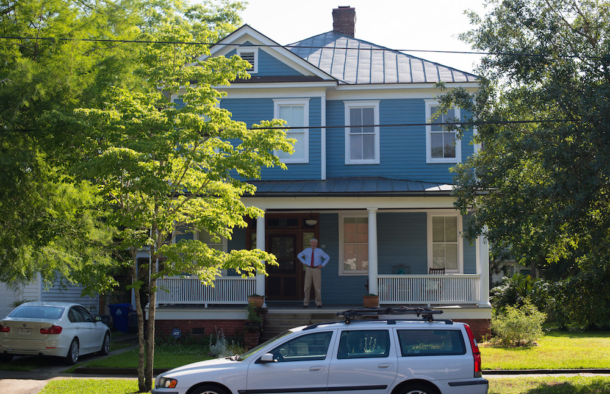
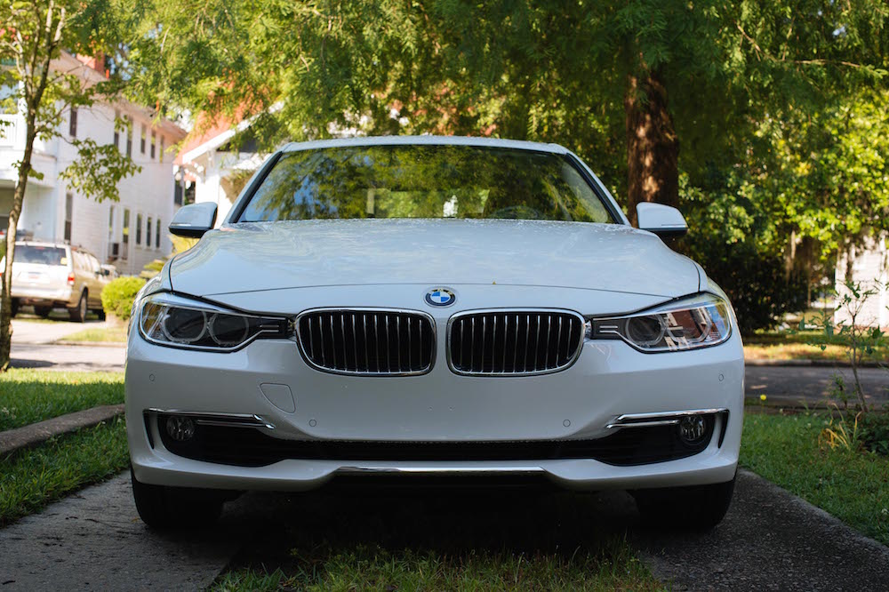
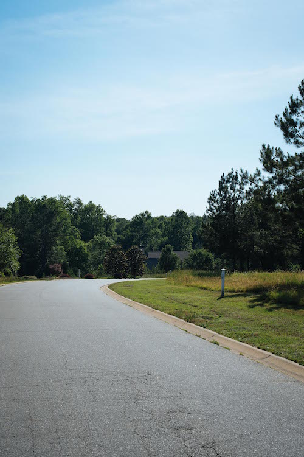
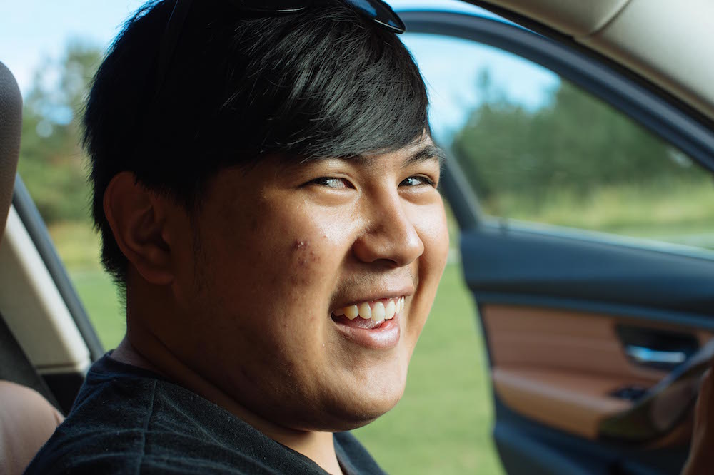
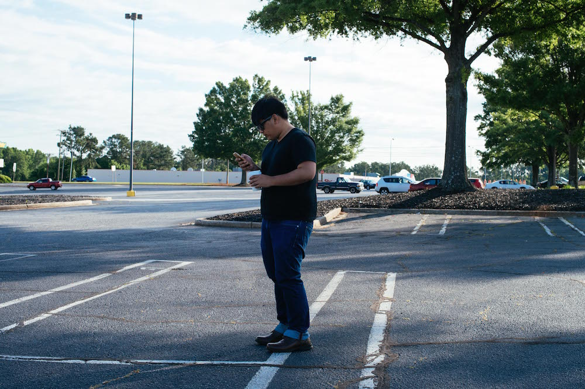
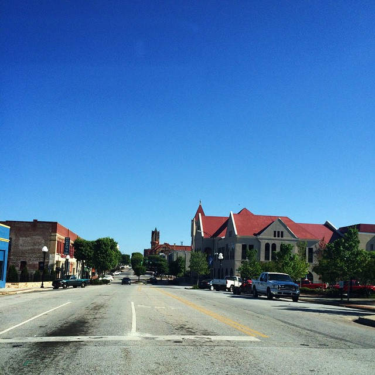
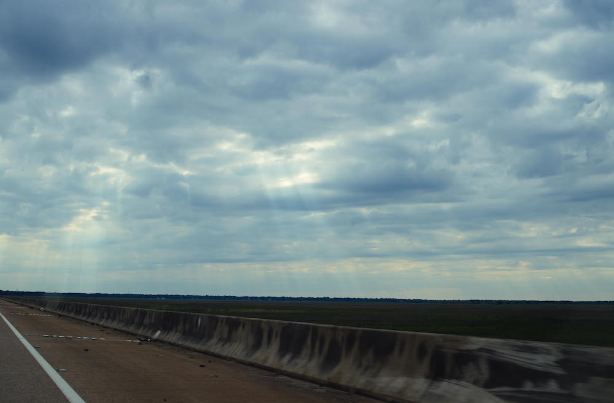

{{ page.title }}
21 May 2015 - ? May 2015
On the twenty-first of May, 2015, I began a road trip with my friend Ryan Gonzalez across the United States of America from Charleston, South Carolina to San Francisco, California. This is the semi-live diary of that voyage.
21 May 2015
Hello goodbye
A mildly tearful goodbye to the parents; a happy welcome from Ryan.

A last sight of home. So long, Charleston; it's been fun.

Obligatory indulgent grille shot.

Stealing himself away from work to say hi.

Don't think I'm going to especially miss the endless pine forests and weird Carolinian suburbs.
22 May 2015
The first leg
We set off some time around 7 or 8 in the morning from Ryan's parents' in Greenwood, South Carolina, or as I would refer to it with characteristic Charlestonian fashion, "Yet Another City In South Carolina That I've Never Heard Of". There's a reason why the rest of the state doesn't like people from Charleston.
I figure out the seat memory functions before we departed. (Photo by Ryan)

Ryan getting familiar with all the various gagetry on the 335i.

Weird old JC Penney store we encountered during (sadly) the first Starbucks stop of the day.

Ryan was not as excited about the building.

Picturesque little South Carolina town we passed through on the way out of the state. I forgot its name.

Beautiful "god rays" over some river somewhere in Mississippi. Or at least I think it was Mississippi. It, Alabama, and Louisiana all sort of blended in together.